Mapping the producer experience while Aflac rebuilt its tools
As part of the Vision 2020 Transformation Initiative, Aflac was rolling out a new generation of CRM tools. I led an eight-week assessment of how its producers actually prospect, propose, and onboard. Through 34 interviews we found where the process was breaking down, mapped it in six user journeys and six "subway map" process guides, and set out the changes Aflac should make before building any further.
Role
UX Lead · Principal Contributor (EY)
Duration
8 weeks · Nov 2016 – Jan 2017
Client
Aflac, Customer Experience team
Team
Me + three junior designers · Aflac CX partners
18
internal stakeholder interviews and tool demos
16
producer interviews across four roles
6
user journeys charting how each producer feels
6
"subway map" process guides, four levels deep
Subway map · Broker pre-sales, Prospect phase
Each step of the process runs as a line. Every station is a task, marked with the tools, people and channels it depends on. Where producers leave the recommended route, the map branches.
Context
Aflac's Transformation Initiative was replacing a patchwork of sales tools with new CRM platforms: BCLM for the broker channel, CCLM for career agents, a new Proposal Tool, and STM v2.0 for recruiting.
The tools were already being designed and built. What nobody had mapped end to end was the experience of the people expected to use them. Aflac sells through producers, a field force of independent agents, sales coordinators, and outside brokers. Most of them are 1099 contractors who can't be told which tools to use.
Aflac's Customer Experience team engaged EY to assess that experience across two processes: pre-sales, which runs from first prospect through acceptance of Aflac products, and career agent onboarding, which runs from a recruit's verbal commitment until they write business independently. The goal was to document pain points, gaps, and opportunities while the transformation could still be steered.
Producer 01
Career Agent
An independent business owner who sells Aflac Individual and Group products directly.
Producer 02
RSC / DSC
Regional and District Sales Coordinators. They sell, and they also recruit, train, and mentor new agents.
Producer 03
Broker
Leads an outside brokerage. Voluntary benefits are a small part of what a broker sells.
Producer 04
Broker Sales Pro
An Aflac employee (BSP) who supports brokers and handles Aflac's side of each case.
The challenge
The brief covered four producer roles, two processes, and both current and future state. We had eight weeks to do it, and the calendar worked against us.
Constraint 01
The engagement ran through Q4 and the holidays. Brokers were closing out the quarter, agents and coordinators were in January enrollment, and a sales leadership conference took up much of the field's time.
Constraint 02
Field gatekeepers were slow to supply contacts, so producer interviews slipped three weeks. We had to run research and synthesis at the same time.
Constraint 03
There was little written down about the future-state CRM tools and few demos to look at. Wireframes and prototypes were explicitly out of scope, so the deliverables had to persuade without screens.
How might we give Aflac a single, shared picture of what producers go through, while the tools meant to support them are still being built?
My role
I owned the engagement from pitch to final readout. I won the work, defined what we would deliver, and led a team of three junior designers through research and production.
Pitched and won the engagement
Set the scope and the deliverables
Managed the timeline, including the three-week slip
Led and mentored three junior designers
Planned the stakeholder and producer research
Directed synthesis of all 34 interviews
Developed the "subway map" format for the process guides
Led production of every deliverable, including the executive summary
Framing two processes
Before mapping anything in detail, we reduced each process to three phases that everyone at Aflac could agree on. Then we placed the new tools against those phases.
Pre-sales process
Prospect
Propose
Commit
Aflac BCLM — broker channel CRM
Aflac CCLM — career channel CRM
Aflac Proposal Tool
Onboarding process
Recruiting
Local onboarding
Aflac onboarding
Aflac STM v2.0 — talent management
Aflac CCLM
This simple frame became the spine of every deliverable. Journeys, process flows, and recommendations all hang from the same phases, so stakeholders could move between them without getting lost.
Research approach
We worked in four phases: plan, assess, design, and deliver. The research was deliberately tool-agnostic. We studied the work, not any one system.
Stakeholders first. Eighteen interviews with vice presidents, senior managers, functional owners, and project leads, plus demos of the transformation tools, gave us the official version of each process and the goals for the future state.
Then the field. Sixteen one-hour interviews, mostly by phone, with BSPs, brokers, DSCs, RSCs, and a career agent showed how the work really happens: the workarounds, the side tools, and the moments where trust in Aflac is won or lost.
Then the system. Piecing the current state together meant a lot of detective work across Aflac.com, Field Force Services, and separate systems. We modeled every path in detailed process flows covering recommended, alternate, optional, and future routes, and marked where Aflac team processes and sub-processes take over.
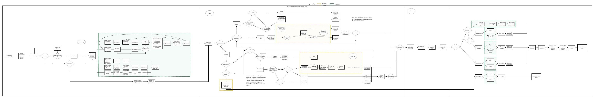
01 — Career Agent pre-sales process flow, one of five. It shows seven different ways to get a proposal made. Scroll to follow the full flow.
The turning point
Leadership described pre-sales as a process. Producers described it as a series of milestones, where getting from one to the next was up to them.
Aflac's new tools were focused on access to capabilities. Nobody was designing the end-to-end experience of moving between them.
The same proposal could be produced seven different ways. Activity was tracked in YouGotNet, lead sheets, Google Docs, or weekly timesheets, depending on the region. Each new platform solved a piece of the problem, but producers would still be switching between apps, signing in several times, and dealing with overlapping features.
That changed what we were there to deliver. The most valuable thing we could give Aflac wasn't a list of tool fixes. It was a picture of the whole journey, shared across the organization, that showed where producers lose time, confidence, and business.
"We have so many tools, tools that do similar things differently."
Internal stakeholder
"I have no idea who is working on my proposal and if it will come out of the pipe correctly."
Producer
"I spend time and resources on someone who leaves, and takes my paycheck with them."
Producer, onboarding
Research insights
Six findings came up again and again across roles. Each one led to a specific recommendation.
01
Insight — "What is going on?"
Proposals vanished into a black box
After submitting a group proposal, producers couldn't see its status or who owned it. Calls and emails went unanswered, and errors turned up only at the end, under deadline.
Recommendation
Add a proposal workflow tool with visible status and escalation, and back it with service level agreements for standard, exception, and RFP proposals.
02
Insight — "Why is it always wrong?"
Errors were found too late to fix gracefully
Data was entered and re-entered by hand across disconnected systems, so a wrong product or rate often surfaced just before enrollment, in front of the client.
Recommendation
Build in early data checks and automate case setup, and add traceable revision control for group proposals.
03
Insight — "How can I do this?"
Producers took the path of least resistance
Producers couldn't get approved materials or simple tools, so they reprinted outdated collateral and picked whatever was fastest. That created brand inconsistency and liability.
Recommendation
Benchmark YouGotNet, the tool the field liked best, and carry its ease of use into BCLM and CCLM. Make self-service the default.
04
Insight
Clients were being contacted by too many agents
The Do Not Call list was out of date and unavailable on mobile, so existing Aflac clients kept hearing from different agents. This also fed conflict between the broker and career channels.
Recommendation
Integrate the list into CRM as a mandatory step before adding an account, make it mobile, and push alerts to producers by territory.
05
Insight
Every region onboarded agents its own way
Coordinators built their own binders, checklists, and training because Aflac's formal training started late. Only about 1 in 10 interviewed candidates reached an offer, and many new agents didn't last.
Recommendation
Standardize the onboarding curriculum and materials, and start Aflac training earlier so new agents get the same foundation everywhere.
06
Insight — "How can I know if any of this is working?"
Success was measured too late to act on
Districts defined conversion differently and tracked lagging numbers. Agents weren't told about incentives that would have motivated them early on.
Recommendation
Track leading indicators, connect STM v2.0 to the learning system, and give coordinators dashboards that flag agents at risk.
Making the journey visible
A finding in a slide deck is easy to agree with and then forget. So we made two kinds of map: user journeys that show how each producer feels, and subway maps that show how the work actually moves.
Each journey follows one producer through the phases of a process. An emotional line runs across the top, showing how they feel at each stage. Callouts mark the moments of truth, where Aflac either earns the producer's confidence or loses it. Below the line, each stop is broken into a consistent set of layers, so the maps can be compared side by side.
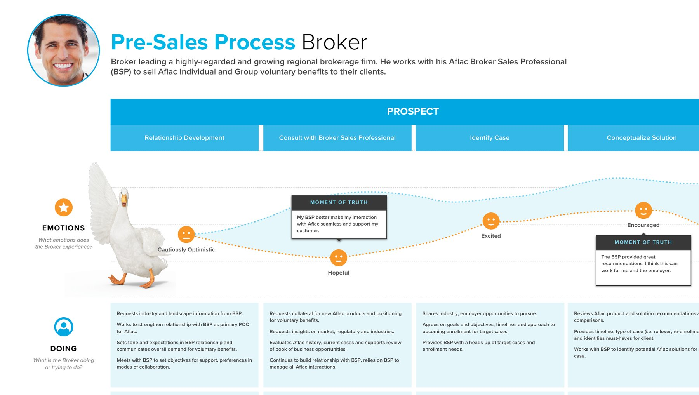
02 — Broker pre-sales user journey, detail. The emotional line and moments of truth sit on top of the layers that explain them.
Emotions
How the producer feels at each stop, plotted as a continuous line.
Doing
What they are actually doing, or trying to do.
Thinking
Their questions and worries, quoted in their own words.
Feeling
The reasons behind each high and low on the line.
Touchpoints
The people, tools, and channels they rely on, both Aflac and external.
Pain points
Where the experience breaks down.
Opportunities
What Aflac could change at that stop.
KPIs
How Aflac would know the change worked.
Six journeys
Four pre-sales journeys, one per producer role, and two onboarding journeys showing recruitment from both sides: the new agent and the coordinator bringing them in. Pick a journey to see its emotional line, then scroll the full map below it.
Pre-sales · Broker
A broker leading a growing regional firm, who relies on his Aflac BSP to sell Individual and Group voluntary benefits.
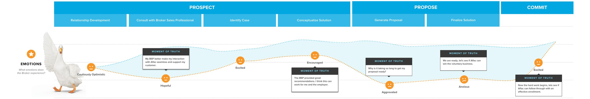
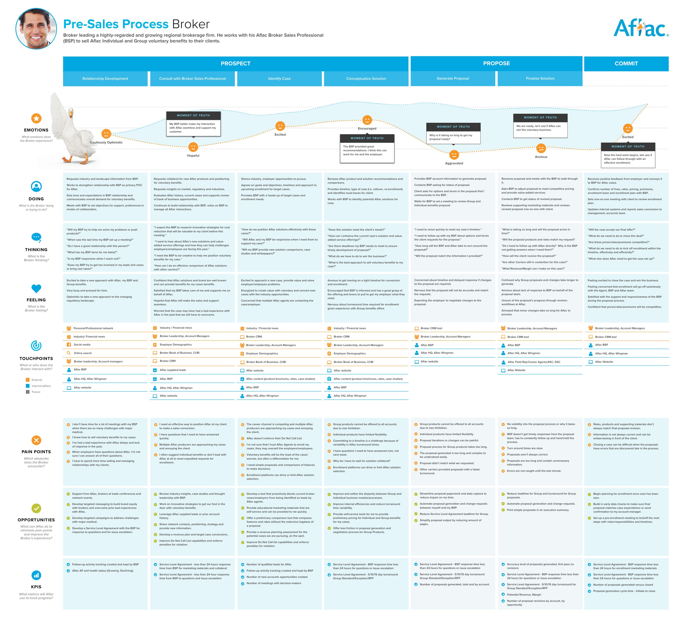
Prospect → Propose → Commit · scroll the map to explore every layerOpen full size →
Pre-sales · Broker Sales Pro
A BSP, assigned to a regional brokerage within the past year, building an Individual and Group solution with his broker.
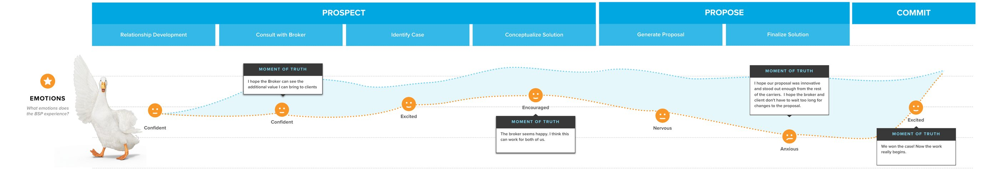
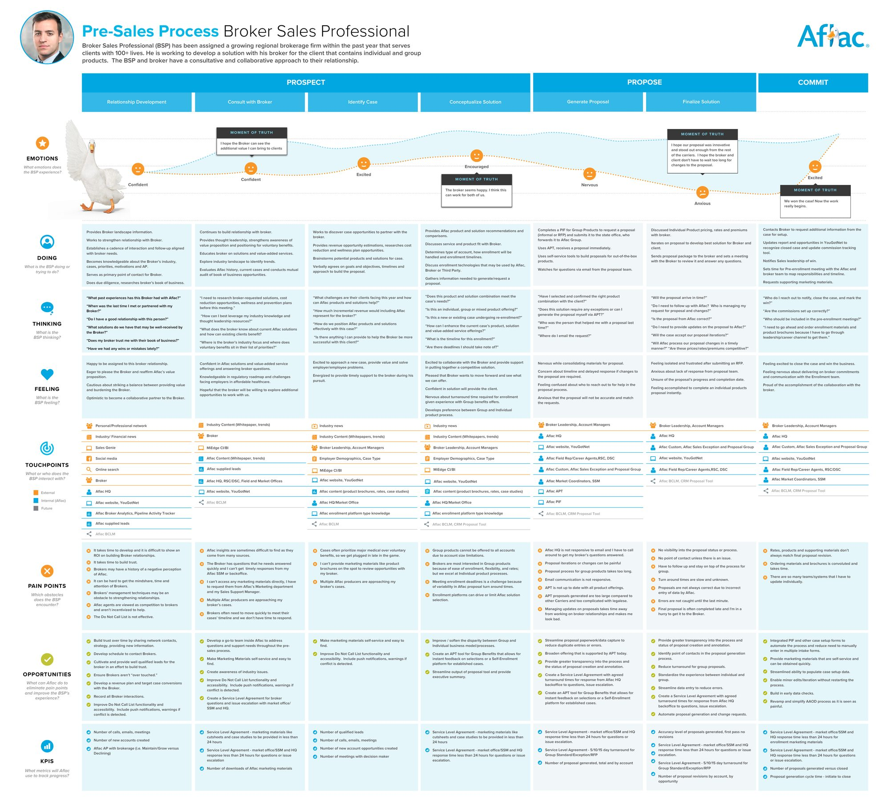
Prospect → Propose → Commit · scroll the map to explore every layerOpen full size →
Pre-sales · Career Agent
An experienced career agent selling Aflac Individual and Group products on his own.
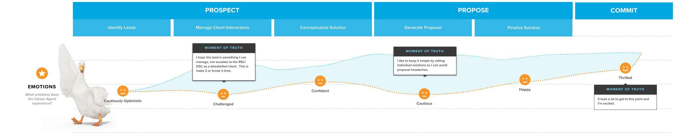
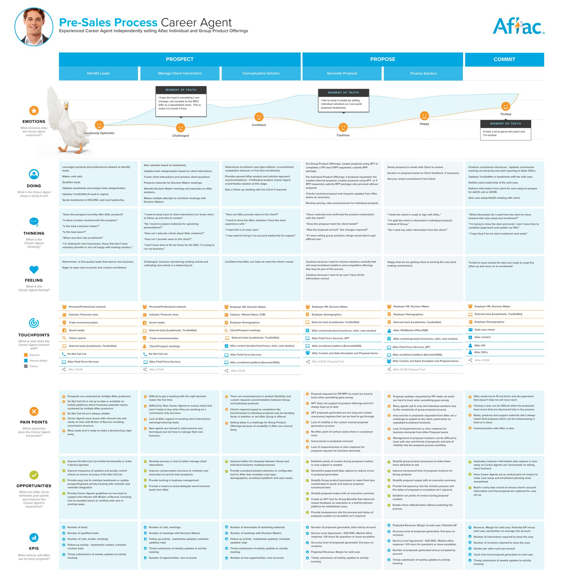
Prospect → Propose → Commit · scroll the map to explore every layerOpen full size →
Pre-sales · RSC / DSC
A sales coordinator writing their own business while mentoring career agents through the sale.
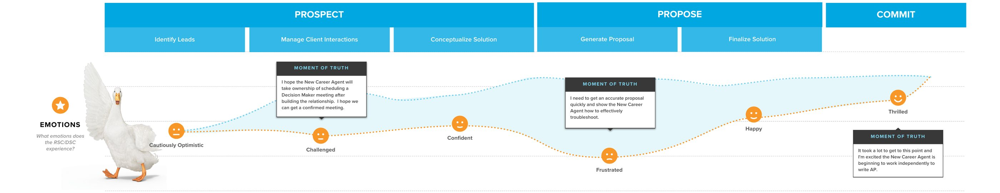
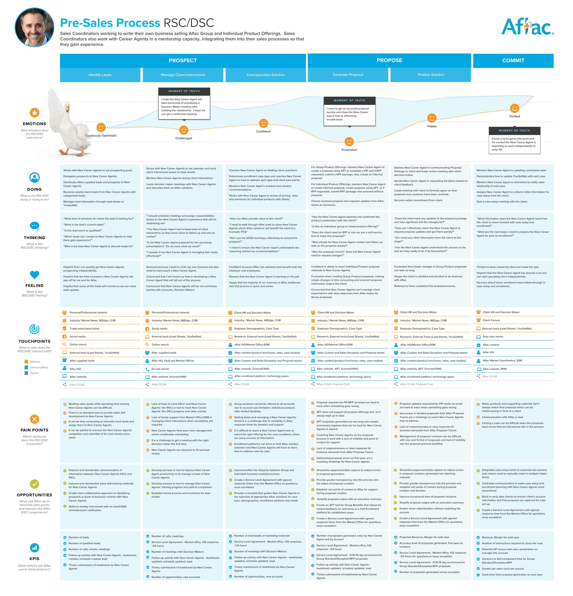
Prospect → Propose → Commit · scroll the map to explore every layerOpen full size →
Onboarding · Career Agent
A new career agent, from first contact with a recruiter through to writing business as a veteran agent.
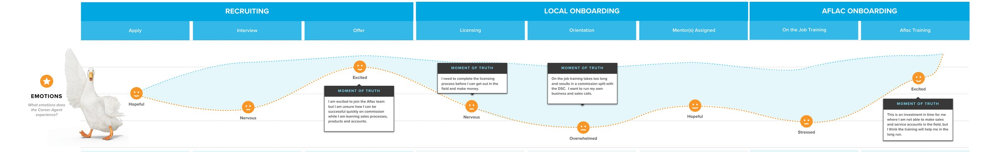
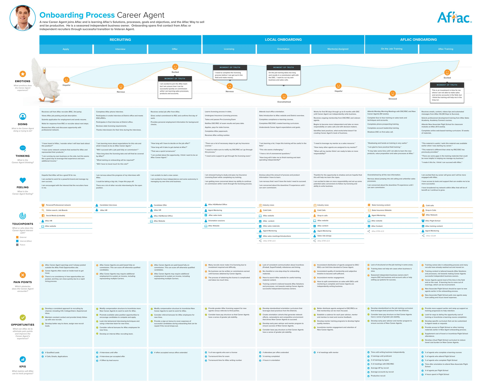
Recruiting → Local onboarding → Aflac onboarding · scroll the map to explore every layerOpen full size →
Onboarding · RSC / DSC
A coordinator recruiting, licensing, training, and mentoring new agents until they sell independently.
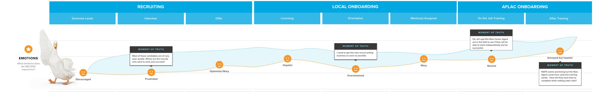
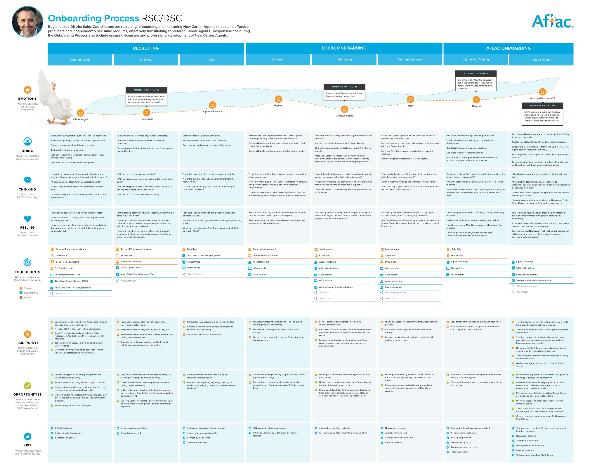
Recruiting → Local onboarding → Aflac onboarding · scroll the map to explore every layerOpen full size →
The subway maps
The journeys show how producers feel. The subway maps show how the work moves: every task, tool and handoff, and every place producers leave the official route.
Each process step is drawn as a transit line, and each task along it is a station. Every station shows who is involved and which tools and channels it depends on, such as BCLM, YouGotNet, lead sheets, the Do Not Call list, phone or email. Where producers go their own way, the line branches, colored by what kind of route it is.
Recommended pathOptional pathAlternate pathFuture pathChallenged pathStation: a task, with its tools and roles
That made the stakeholder findings concrete. "Proposals get made seven different ways" stopped being a sentence in a findings deck. It became a set of routes you could see, each with its pros, cons and producer quotes.
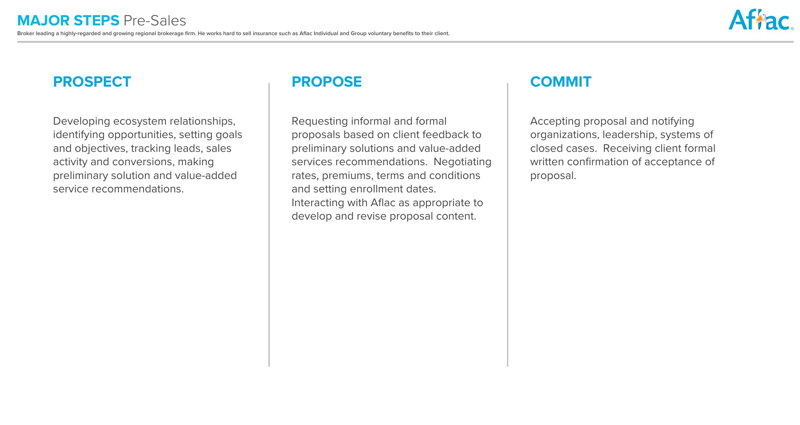
Level 1
Major steps
A broad overview of the phases and the critical activities in each.
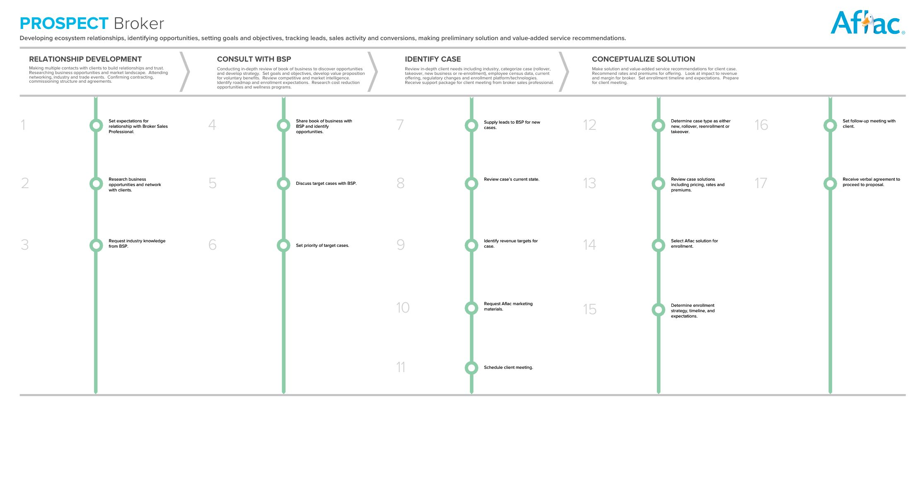
Level 2
Steps and activities
Each phase laid out as lines of numbered steps, with the challenges at each.
Level 3
Stations and tools
The routes producers actually take, with the tools, platforms and roles at every station.
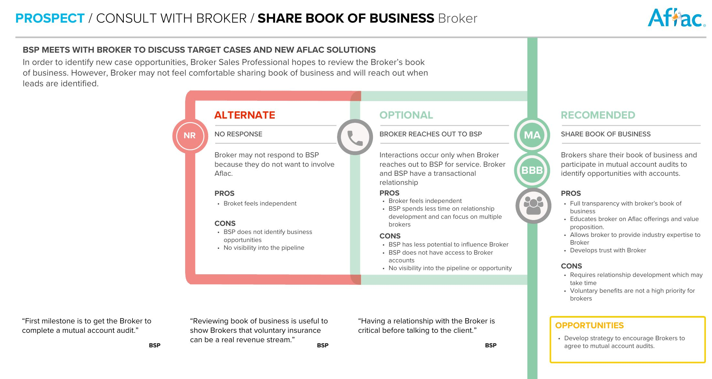
Level 4
Deep dives
Close-ups of high-pain stations, comparing each route's pros, cons and opportunities, with quotes from interviews.
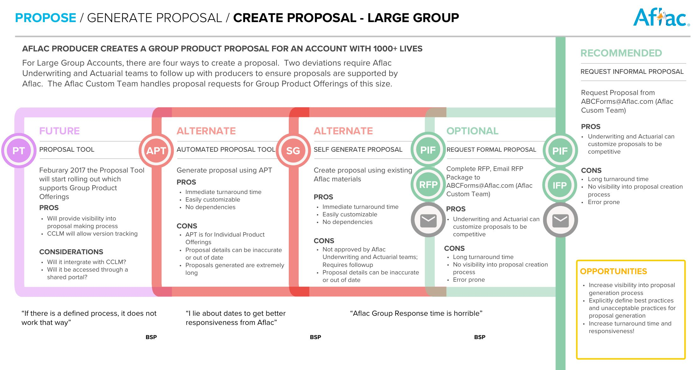
03 — Level 4 deep dive: a BSP creating a large group proposal. Five routes, each with its trade-offs, side by side.
All six subway maps
One guide per journey, from Level 1 overview down to Level 4 deep dives. Pick a producer, then step through the pages.
Putting both sets of interviews side by side showed where headquarters and the field saw the same problem from opposite ends.
What headquarters saw
What producers lived
Recommendation
Producers don't follow the process
There's no single process to follow, and the official one is slow
Define and publish best practices, and retire the informal routes
Regions go off on their own
Local workarounds fill gaps Aflac leaves open
Find the field's best practices and scale them
We can't tell if anything is working
"Our reporting is terrible"
A balanced scorecard of leading and lagging indicators
New agents turn over too quickly
Expectations and incentives are never explained
Share metrics and incentives from the first week
Group business is underperforming
"I wish Aflac could make Group like Aflac Traditional"
Give Group proposals the same speed and visibility as Individual
Recommendations
The executive summary closed with a prioritized set of recommendations. The first was about how Aflac builds software, not about any single tool.
01
Design before you build
Base every system on user research, and validate with low-fidelity prototypes before committing development. Start the next program, CCLM or Case Setup Manager, with an innovation workshop to define the MVP.
02
Go deeper on tools now shipping
Gather producer feedback on BCLM, the Proposal Tool, and STM v2.0 while the backlog can still change. Plan for the gap between the BCLM and CCLM launches.
03
Fix the highest-pain moments
Do Not Call accuracy, proposal revisions and case setup errors, group proposal turnaround, activity tracking, onboarding curriculum, and retention metrics.
04
Keep following the journey
Apply the same method to the next stages, case setup and enrollment, until the whole producer experience is mapped.
What we delivered
Five work products, brought together in an executive summary and recommendations in January 2017.
Deliverable
Result
Stakeholder research findings
18 interviews synthesized
Producer research findings
16 interviews, 4 roles
User journeys
6 journeys
"Subway map" process guides
6 guides, 4 levels deep
Detailed process flows
5 flows
Executive summary and recommendations
Prioritized roadmap
Reflection
This was an assessment brought in after development had already started. That was the most important lesson of the project.
Much of what producers told us could have been learned before a line of code was written. The work was useful because it made that cost visible to leadership. Laying the journeys out side by side made the case for research up front more clearly than any argument could.
If you keep building without user-centered design, you'll keep commissioning assessments like this one, after the fact.
A shared picture beats a long list
The journeys gave executives, CX, and IT one artifact to point at, so the conversation could be about moments in the journey instead of individual tools.
Interview both sides of every handoff
The most useful insights came from comparing what headquarters believed with what the field experienced.
Plan for the calendar you have
Running research and synthesis in parallel after a three-week slip only works when the framing is settled early, so the team always knows where a new finding belongs.
Grow the team while doing the work
I brought three junior designers into interviews, synthesis, and production, so they learned the method by doing it, not just the visual craft.
 Level 4 · Proposal · small group
Level 4 · Proposal · small group Level 4 · Proposal · individual
Level 4 · Proposal · individual Level 4 · Proposal · large group
Level 4 · Proposal · large group Level 4 · Proposal · individual
Level 4 · Proposal · individual Level 4 · Proposal · large group
Level 4 · Proposal · large group Level 4 · Proposal · small groupLevel 4 · Proposal · individualLevel 2 · Commit · stepsLevel 3 · Commit · stations and tools
Level 4 · Proposal · small groupLevel 4 · Proposal · individualLevel 2 · Commit · stepsLevel 3 · Commit · stations and tools Level 4 · Proposal · large group
Level 4 · Proposal · large group Level 4 · Proposal · small groupLevel 4 · Proposal · individualLevel 2 · Commit · stepsLevel 3 · Commit · stations and tools
Level 4 · Proposal · small groupLevel 4 · Proposal · individualLevel 2 · Commit · stepsLevel 3 · Commit · stations and tools